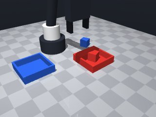

0 demonstrations · reward: gt · perception: vision · 8 practice episodes in 1 rounds
Safety layer: 0 halts, 0 clamps. OpenCV perception: 99% of object sightings, median error 0.03 mm.
| role | model | calls | tokens in | tokens out | USD |
|---|---|---|---|---|---|
| coder | nvidia/Nemotron-3-Ultra-550b-a55b | 1 | 1,818 | 1,604 | $0.0066 |
| summarizer | nvidia/Nemotron-3_5-Lightning | 0 | 0 | 0 | $0.0000 |
| compute | local | 136 s | $0.0000 | ||
| total | 1 | 1,818 | 1,604 | $0.0066 |
- First version: need to pick up each cube and place in matching colored tray - Cubes are 3cm, center at z≈0.015 on table; grasp at z≈0.015 (tool point) puts fingers at mid-height - Trays have inner half-size 0.044m (8.8cm square), walls 2.5cm high - Must handle perception noise, verify grasps, retry on failure, catch MotionError - Approach: observe → for each color: move above cube → lower → grasp → verify → lift → move above tray → lower → release → verify
--- round_0/skill.py +++ round_1/skill.py @@ -0,0 +1,135 @@ +import math + +def run(robot): + # Observe initial scene + obs = robot.observe() + objects = obs.get("objects", {}) + fixtures = obs.get("fixtures", {}) + + # Find cubes and trays by color + cubes = {} + trays = {} + for name, obj in objects.items(): + if obj.get("shape") == "cube": + cubes[obj["color"]] = name + for name, fix in fixtures.items(): + if fix.get("kind") == "tray": + trays[fix["color"]] = name + + # Need both red and blue + for color in ("red", "blue"): + if color not in cubes or color not in trays: + robot.log(f"Missing {color} cube or tray") + return False + + success_count = 0 + + for color in ("red", "blue"): + cube_name = cubes[color] + tray_name = trays[color] + + if not pick_and_place(robot, cube_name, tray_name, color): + robot.log(f"Failed to place {color} cube") + # Try to recover by going home + robot.home() + continue + success_count += 1 + + return success_count == 2 + + +def pick_and_place(robot, cube_name, tray_name, color): + """Pick up cube and place in tray. Returns True on success.""" + max_attempts = 3 + + for attempt in range(max_attempts): + try: + # Get fresh poses + cube_pose = robot.get_pose(cube_name) + tray_pose = robot.get_pose(tray_name) + except Exception as e: + robot.log(f"Pose lookup failed: {e}") + robot.wait(0.5) + continue + + cx, cy, cz = cube_pose["pos"] + cyaw = cube_pose["yaw"] + tx, ty, _ = tray_pose["pos"] + + # Approach cube from above (high Z) + approach_z = 0.15 + grasp_z = 0.015 # Tool point at cube center height + + # Move above cube + if not safe_move(robot, cx, cy, approach_z, yaw=cyaw, speed=0.15): + robot.log(f"Approach move failed for {color} cube") + continue + + # Lower to grasp height + if not safe_move(robot, cx, cy, grasp_z, yaw=cyaw, speed=0.05): + robot.log(f"Lower move failed for {color} cube") + continue + + # Grasp + robot.wait(0.1) + if not robot.grasp(): + robot.log(f"Grasp failed for {color} cube") + robot.move_by(dz=0.05, speed=0.1) # Back up + continue + + # Verify grasp + if robot.holding() != cube_name: + robot.log(f"Not holding {color} cube after grasp") + robot.release() + robot.move_by(dz=0.05, speed=0.1) + continue + + # Lift cube + if not safe_move(robot, cx, cy, approach_z, yaw=cyaw, speed=0.1): + robot.log(f"Lift failed for {color} cube") + robot.release() + continue + + # Move above tray (use tray center, no specific yaw needed) + if not safe_move(robot, tx, ty, approach_z, speed=0.15): + robot.log(f"Move to tray failed for {color}") + robot.release() + continue + + # Lower into tray - need to clear walls (2.5cm), so lower to just above tray bottom + # Tray bottom is at z=0, cube center will be at ~0.015 when placed + place_z = 0.02 # Slightly above tray bottom + if not safe_move(robot, tx, ty, place_z, speed=0.05): + robot.log(f"Lower into tray failed for {color}") + robot.release() + continue + + # Release + robot.release() + robot.wait(0.1) + + # Verify release by moving up and checking holding + robot.move_by(dz=0.05, speed=0.1) + if robot.holding() is not None: + robot.log(f"Still holding after release for {color}") + # Try to shake loose + robot.move_by(dz=0.02, speed=0.1) + robot.move_by(dz=-0.02, speed=0.1) + if robot.holding() is not None: + continue + + # Success for this cube + robot.log(f"Placed {color} cube successfully") + return True + + return False + + +def safe_move(robot, x, y, z, yaw=None, speed=0.15): + """Move with MotionError catching and result checking.""" + try: + result = robot.move_to(x, y, z, yaw=yaw, speed=speed) + return result.get("ok", False) + except Exception as e: + robot.log(f"MotionError: {e}") + return False

import math
def run(robot):
# Observe initial scene
obs = robot.observe()
objects = obs.get("objects", {})
fixtures = obs.get("fixtures", {})
# Find cubes and trays by color
cubes = {}
trays = {}
for name, obj in objects.items():
if obj.get("shape") == "cube":
cubes[obj["color"]] = name
for name, fix in fixtures.items():
if fix.get("kind") == "tray":
trays[fix["color"]] = name
# Need both red and blue
for color in ("red", "blue"):
if color not in cubes or color not in trays:
robot.log(f"Missing {color} cube or tray")
return False
success_count = 0
for color in ("red", "blue"):
cube_name = cubes[color]
tray_name = trays[color]
if not pick_and_place(robot, cube_name, tray_name, color):
robot.log(f"Failed to place {color} cube")
# Try to recover by going home
robot.home()
continue
success_count += 1
return success_count == 2
def pick_and_place(robot, cube_name, tray_name, color):
"""Pick up cube and place in tray. Returns True on success."""
max_attempts = 3
for attempt in range(max_attempts):
try:
# Get fresh poses
cube_pose = robot.get_pose(cube_name)
tray_pose = robot.get_pose(tray_name)
except Exception as e:
robot.log(f"Pose lookup failed: {e}")
robot.wait(0.5)
continue
cx, cy, cz = cube_pose["pos"]
cyaw = cube_pose["yaw"]
tx, ty, _ = tray_pose["pos"]
# Approach cube from above (high Z)
approach_z = 0.15
grasp_z = 0.015 # Tool point at cube center height
# Move above cube
if not safe_move(robot, cx, cy, approach_z, yaw=cyaw, speed=0.15):
robot.log(f"Approach move failed for {color} cube")
continue
# Lower to grasp height
if not safe_move(robot, cx, cy, grasp_z, yaw=cyaw, speed=0.05):
robot.log(f"Lower move failed for {color} cube")
continue
# Grasp
robot.wait(0.1)
if not robot.grasp():
robot.log(f"Grasp failed for {color} cube")
robot.move_by(dz=0.05, speed=0.1) # Back up
continue
# Verify grasp
if robot.holding() != cube_name:
robot.log(f"Not holding {color} cube after grasp")
robot.release()
robot.move_by(dz=0.05, speed=0.1)
continue
# Lift cube
if not safe_move(robot, cx, cy, approach_z, yaw=cyaw, speed=0.1):
robot.log(f"Lift failed for {color} cube")
robot.release()
continue
# Move above tray (use tray center, no specific yaw needed)
if not safe_move(robot, tx, ty, approach_z, speed=0.15):
robot.log(f"Move to tray failed for {color}")
robot.release()
continue
# Lower into tray - need to clear walls (2.5cm), so lower to just above tray bottom
# Tray bottom is at z=0, cube center will be at ~0.015 when placed
place_z = 0.02 # Slightly above tray bottom
if not safe_move(robot, tx, ty, place_z, speed=0.05):
robot.log(f"Lower into tray failed for {color}")
robot.release()
continue
# Release
robot.release()
robot.wait(0.1)
# Verify release by moving up and checking holding
robot.move_by(dz=0.05, speed=0.1)
if robot.holding() is not None:
robot.log(f"Still holding after release for {color}")
# Try to shake loose
robot.move_by(dz=0.02, speed=0.1)
robot.move_by(dz=-0.02, speed=0.1)
if robot.holding() is not None:
continue
# Success for this cube
robot.log(f"Placed {color} cube successfully")
return True
return False
def safe_move(robot, x, y, z, yaw=None, speed=0.15):
"""Move with MotionError catching and result checking."""
try:
result = robot.move_to(x, y, z, yaw=yaw, speed=speed)
return result.get("ok", False)
except Exception as e:
robot.log(f"MotionError: {e}")
return False